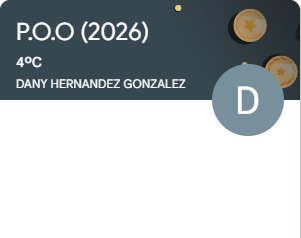

Trabajos Con JavaScript
Objetivo: Aprender JavaScript para desarrollar páginas web interactivas y dinámicas, permitiendo crear funciones como formularios inteligentes, menús interactivos, animaciones y aplicaciones web modernas que mejoren la experiencia del usuario.
